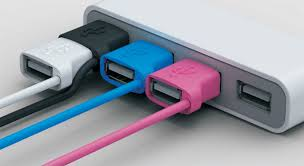

Останні новини
- Як працюють USB зарядки, або як уникнути підривання вашого смартфону
- USB 3.1 показує кращі успіхи ніж USB 3.0, ранні тести показують...
- USB Type-C будуть односторонніми, як Apple Lightning.

jdshgfsngkljnkf hseiughiushgbfsjknsfg
Стандарт USB розробили сім компаній: «Compaq», «Digital Equipment», IBM, Intel, «Microsoft», NEC і «Northern Telecom». З листопада 1994 до листопада 1995 року було анонсовано кілька версій протоколу (USB 0.7, 0.8, 0.9, 0.99, 1.0 Release Candidate). Влітку 1996 року на ринку з'явилися перші комп'ютери з портами USB. Шина USB — послідовний інтерфейс передавання даних для середньо- та низько швидкісних периферійних пристроїв. Для високошвидкісних пристроїв кращою вважалася шина FireWire, хоча з випуском пристроїв на базі USB 3.0 це твердження стало сумнівним.
Версія USB 2.0 випущена в квітні 2000 року, вона відрізняється від USB 1.1 лише вищою швидкістю передачі та незначними змінами в протоколі передачі даних для режиму Hi-Speed (480 Мбіт/с). Сигнали в 4-проводних кабелях USB 1.0 … USB 2.0 передаються двома екранованими проводами на 2-й та 3-й контакти штекера.
USB 3.0 або USB Super Speed - нове покоління інтерфейсу USB (Universal Serial Bus). Його ключовою відмінністю від попередньої версії USB 2.0 (або High Speed) є зростаюча з 480Мбіт/сек до 5Гбіт/cек максимальна теоретична швидкість передачі даних.
more